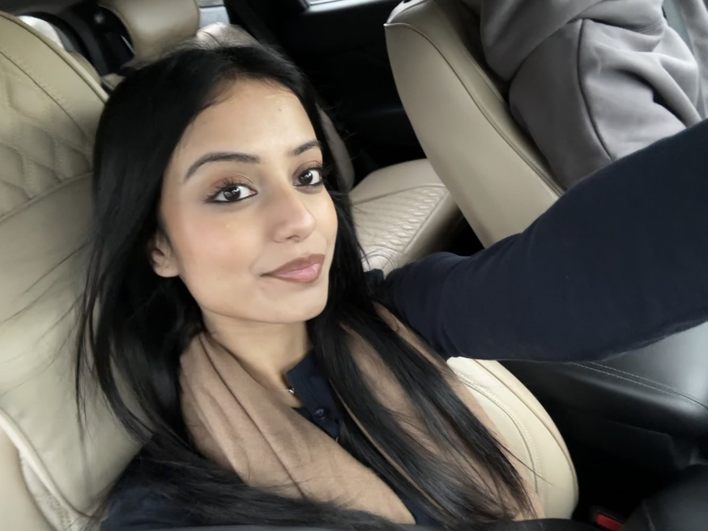

01 / A PERSONAL PORTFOLIO
A Work
in Progress.
Hi, I'm Saachi. I am studying Law & Commerce majoring in Human Resources, and currently work as a Legal Assistant. I'm interested in what actually makes workplaces work for people.
START HERE ↗2021 / 2023 / 2026 My career progression

THE PERSON BEHIND THE PORTFOLIO / 2026HELLO
FIELD NOTES / WHAT YOU'LL FIND
This isn't a list
of skills.
It is an account of where I developed them, where they were tested, and what I still need to learn.
What changes when you stop looking only at the task, and start paying attention to the people, decisions and systems around it?